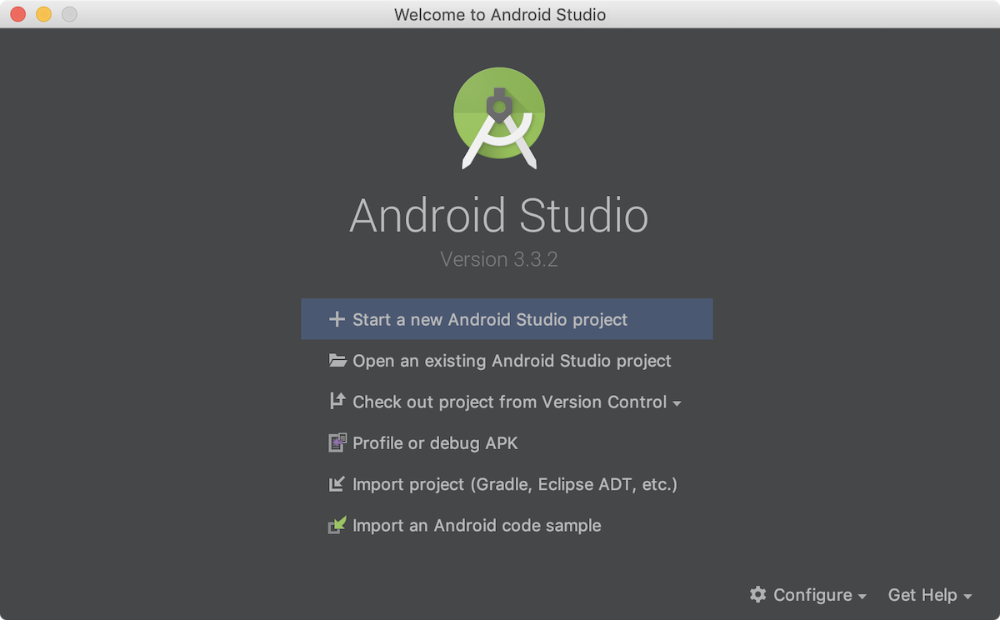
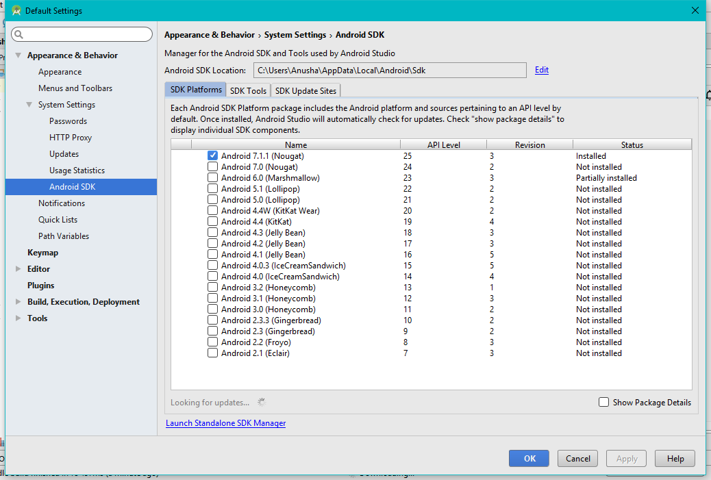

Android: ambiente di sviluppo
Android Studio
Scaricare Android Studio da https://developer.android.com/studio
Scaricare ed installare (o estrarre) e poi lanciare il setup.
Sotto Linux eseguire da terminale "bin/.studio.sh". Da quel momento scarica l'SDK e potrebbe richiedere tempo in base alla connessione.
Al primo avvio si presenta questa schermata

Cliccando su "SDK Manager" si presenta quest'altra schermata

in cui occorre selezionare quale SDK si vuole scaricare (consigliato dalla 5 in poi).
In base alla connessione può impiegare molto tempo.
GIT
Vedere git